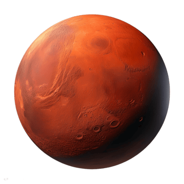
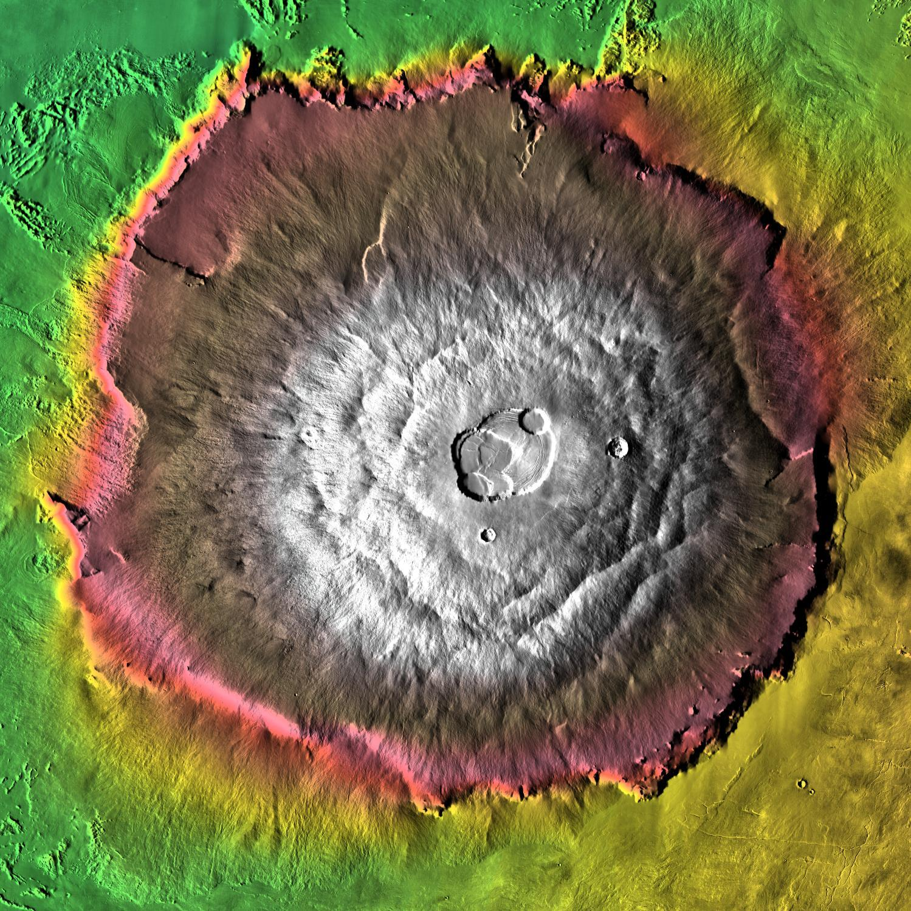

Mars is one of the most explored bodies in our solar system, and it's the only planet where we've sent rovers to roam the alien landscape. NASA missions have found lots of evidence that Mars was much wetter and warmer, with a thicker atmosphere, billions of years ago. It is often called the "Red Planet".
With a radius of 2,106 miles (3,390 kilometers), Mars is about half the size of Earth. If Earth were the size of a nickel, Mars would be about as big as a raspberry.
From an average distance of 142 million miles (228 million kilometers), Mars is 1.5 astronomical units away from the Sun. One astronomical unit (abbreviated as AU), is the distance from the Sun to Earth. From this distance, it takes sunlight 13 minutes to travel from the Sun to Mars.
Mars takes 687 Earth days to complete one orbit around the Sun. This is almost twice as long as an Earth year. Mars rotates on its axis once every 24 hours and 37 minutes, which is just a little longer than an Earth day.
Mars has a solid inner core, a liquid outer core, a mantle, and a crust. The inner core is thought to be made of iron, nickel, and sulfur, and is about 1,500 miles (2,400 kilometers) in radius. The outer core is liquid and is about 1,000 miles (1,600 kilometers) thick. The mantle is made of silicate rocks that are rich in magnesium and iron and extends to a depth of about 1,800 miles (2,900 kilometers). The crust is the outermost layer of Mars and varies in thickness from about 12 miles (20 kilometers) to 37 miles (60 kilometers).
Mars has the largest volcano in the solar system, Olympus Mons, which is about 13.6 miles (22 kilometers) high and 370 miles (600 kilometers) in diameter. It also has the longest canyon, Valles Marineris, which is about 2,500 miles (4,000 kilometers) long and up to 7 miles (11 kilometers) deep. The surface of Mars is covered in iron oxide, which gives it its reddish color.

Mars has two small moons, Phobos and Deimos. Phobos is the larger of the two, with a diameter of about 14 miles (22 kilometers), while Deimos is about 8 miles (13 kilometers) in diameter. Both moons are irregularly shaped and are thought to be captured asteroids.
Back to Solar System